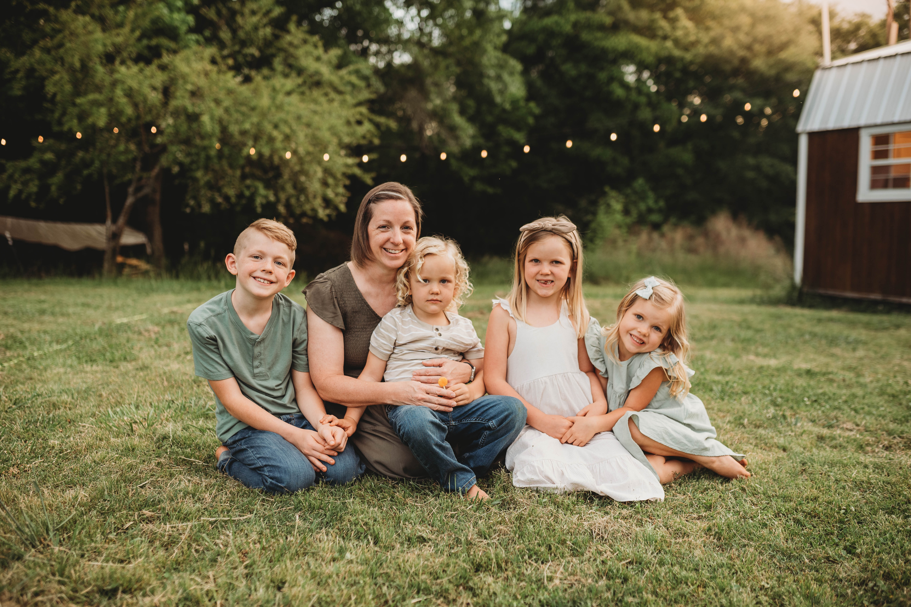

The things I love!

Fitness and Health
I believe in living a healthy lifestyle and the key to unlocking my fullest potential is by being physically, mentally, emotionally and spiritually fit. As I take care of each of these areas of my life I feel strong, energized and am able to live life to the fullest.
I enjoy various forms of physical exercise. I love to ride my Peloton bike, run on the treadmill, lifting weights, yoga and stretching. I love to go on walks in my neighborhood and I love hiking and trail walks.
In addition to physical fitness, I am a believer in the power of nutrition for overall wellness. Good, nutritious food isn't just fuel; it is medicine for the body and mind. I love to eat and cook whole foods and try out new recipes.

Grammie
I am grammie to four beautiful and energetic grandkids. I have two granddaughters, Avery(7) and Ellie(5) and two grandsons, Liam(9) and Jax(3). They live out on a farm and we have so much fun together. We love to create special memories together like baking cookies, reading stories, going to plays and playing at the park. I cherish every moment I spend with my grandkids.
One of the best aspects of being a grandma is providing love and support. I love to listen, offer support and encouragment and celebrate every achievement. Being a grandma has brought immeasureable happiness, love and wisdom into my life and I counldn't be more proud and happy to be a grandma!

Gardening
I have a passion for gardening. I began gardening as a young child with my parents and siblings. Me and my eight siblings would work every Saturday in the garden, planting new seeds, weeding, and picking the harvest. We often times would eat the harvest before it even made it into the house. It brings back lots of fond memories spent working with my family.
I love working in the dirt and enjoying the fruits of my labor with the fruits and vegetables that are picked and eaten as well as the beauties of the flowers, shrubs and trees. Gardening has helped me to connect to the beauties of the natural world and find peace.